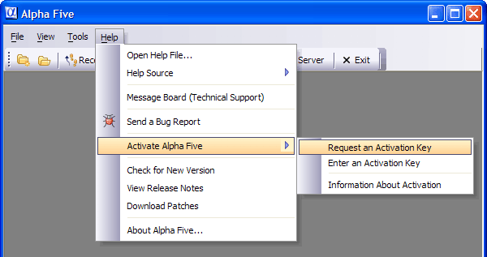
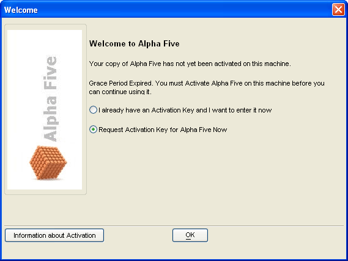
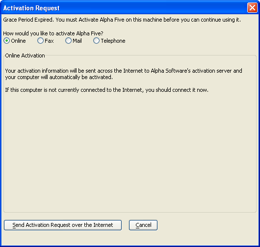
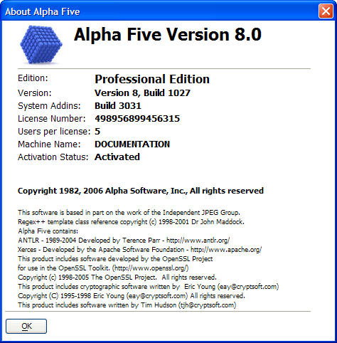

About Activating Alpha Five
What Is Activation?
Each Alpha Five license allows you to install Alpha Five on one machine (your primary machine), and a personal portable machine that is not connected to the same network as your primary machine.
Activation is the process that ties your copy of Alpha Five to the machines on which it was activated.
Why Does Alpha Software Require Activation?
Activation helps to prevent unauthorized use of Alpha Five. We feel that this is in the best interests of both Alpha Five users, and Alpha Software, because it will allow us to invest more in the future development of Alpha Five.
Is it Difficult to Activate Alpha Five?
Our Activation process is extremely easy. If you activate Alpha Five over the Internet, you can complete the process in just a few minutes. If your computer is not connected to the Internet, then you can activate Alpha Five by telephone, mail, or fax.
If you are connected to the Internet, in the main Alpha Five menu select Help > Activate Alpha Five > Request an Activation Key.

If you are not connected to the Internet, contact Alpha Software by telephone, fax, or mail. When you receive your activation key from Alpha Software:
Select Help > Activate Alpha Five > Enter an Activation Key.
Enter your Activation Key exactly as it was provided to you.
Grace Period
After Alpha Five is initially installed on a computer it will work without having to be activated for 45 days. This period is referred to as the "grace period". Once the grace period has expired, you will no longer be able to run Alpha Five on that computer until it has been activated.

If you select Request Activation Key for Alpha Five Now, the following screen appears. If you select Online, then click Send Activation Request over the Internet.

An activation key is a system generated code based on the combination of your Alpha license number and the "Machine Name" of your computer.
What is your "Machine Name"? The easiest way to get your "Machine Name" is to open up Alpha Five and select Help > About Alpha Five.... The resulting dialog box contains your license number and "Machine Name".

Help us help you
Some people have an activation problem when they re-install Alpha Five, reformat their hard drives, or replace computers.
If you have a problem, the first thing to do is make a note of your license number(s) and the "Machine Name(s)" of the computers that the software is installed on. (You can find this out by going through the process explained above).
Remember that the activation key is linked to the license number and the "Machine Name" of the computer, so if you ever have to re-install your OS, then you want to rename your computer the same that it was named before. For example, if your laptop is called "LAPTOP" and you need to reformat your hard drive, it is quite possible that the name of your computer will default to a system name, so rather try and rename it "LAPTOP" and you will not have any further problems regarding the activation of the software. If however you are not able to rename the computer the same name, then you will need to notify our customer service department of the change. We will then de-activate the old "name" and this will in turn allow you to re-activate with the new name.
If you need to contact Alpha Software regarding activation, please supply as much information as possible.
You will want to include your Alpha Five license number(s) and the affected "Machine Name(s)". You can simply send us an email ( ) with the following information.
Your license number(s).
The affected "Machine Name" that you wish to be removed.
If need be, the "Machine Name" of the new computer.
We will then process the necessary requests for you and email back the new activation keys.
Remember in an emergency, you can always rename your computer to what it was before, and you will not need to re-activate the software, and that is why it is important to make a note of your current license numbers and "Machine Names".